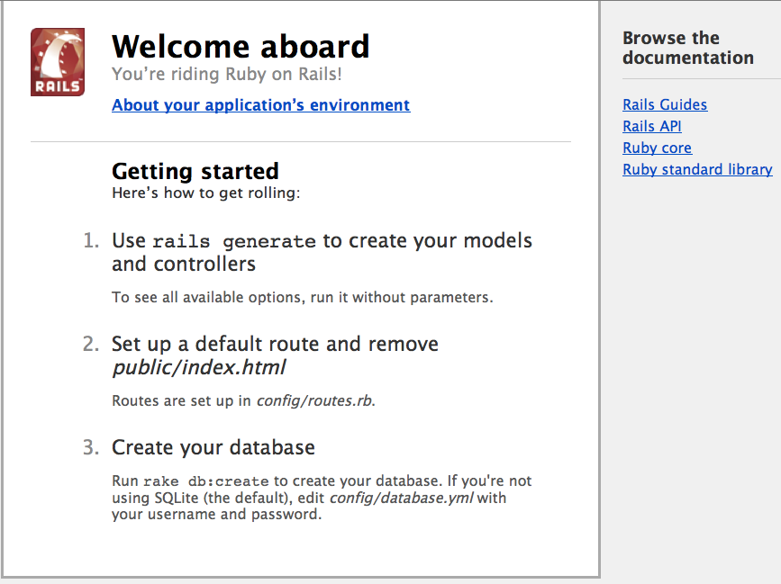
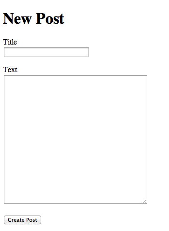
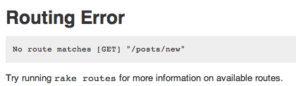

This Guide is based on Rails 3.1. Some of the code shown here will not work in earlier versions of Rails.
The Edge version of this guide is currently being re-worked. Please excuse us while we re-arrange the place.
1 Guide Assumptions
This guide is designed for beginners who want to get started with a Rails application from scratch. It does not assume that you have any prior experience with Rails. However, to get the most out of it, you need to have some prerequisites installed:
- The Ruby language version 1.8.7 or higher
Note that Ruby 1.8.7 p248 and p249 have marshaling bugs that crash Rails 3.0. Ruby Enterprise Edition have these fixed since release 1.8.7-2010.02 though. On the 1.9 front, Ruby 1.9.1 is not usable because it outright segfaults on Rails 3.0, so if you want to use Rails 3 with 1.9.x jump on 1.9.2 for smooth sailing.
- The RubyGems packaging system
- If you want to learn more about RubyGems, please read the RubyGems User Guide
- A working installation of the SQLite3 Database
Rails is a web application framework running on the Ruby programming language. If you have no prior experience with Ruby, you will find a very steep learning curve diving straight into Rails. There are some good free resources on the internet for learning Ruby, including:
2 What is Rails?
This section goes into the background and philosophy of the Rails framework in detail. You can safely skip this section and come back to it at a later time. Section 3 starts you on the path to creating your first Rails application.
Rails is a web application development framework written in the Ruby language. It is designed to make programming web applications easier by making assumptions about what every developer needs to get started. It allows you to write less code while accomplishing more than many other languages and frameworks. Experienced Rails developers also report that it makes web application development more fun.
Rails is opinionated software. It makes the assumption that there is a “best” way to do things, and it’s designed to encourage that way – and in some cases to discourage alternatives. If you learn “The Rails Way” you’ll probably discover a tremendous increase in productivity. If you persist in bringing old habits from other languages to your Rails development, and trying to use patterns you learned elsewhere, you may have a less happy experience.
The Rails philosophy includes two major guiding principles:
- DRY – “Don’t Repeat Yourself” – suggests that writing the same code over and over again is a bad thing.
- Convention Over Configuration – means that Rails makes assumptions about what you want to do and how you’re going to do it, rather than requiring you to specify every little thing through endless configuration files.
3 Creating a New Rails Project
The best way to use this guide is to follow each step as it happens, no code or step needed to make this example application has been left out, so you can literally follow along step by step. You can get the complete code here.
By following along with this guide, you’ll create a Rails project called blog, a (very) simple weblog. Before you can start building the application, you need to make sure that you have Rails itself installed.
The examples below use # and $ to denote terminal prompts. If you are using Windows, your prompt will look something like c:\source_code>
3.1 Installing Rails
To install Rails, use the gem install command provided by RubyGems:
# gem install rails
If you’re working on Windows, you can quickly install Ruby and Rails with Rails Installer.
To verify that you have everything installed correctly, you should be able to run the following:
$ rails --version
If it says something like “Rails 3.2.2” you are ready to continue.
3.2 Creating the Blog Application
Rails comes with a number of generators that are designed to make your development life easier. One of these is the new application generator, which will provide you with the foundation of a Rails application so that you don’t have to write it yourself.
To use this generator, open a terminal, navigate to a directory where you have rights to create files, and type:
$ rails new blog
This will create a Rails application called Blog in a directory called blog.
You can see all of the switches that the Rails application builder accepts by running rails new -h.
After you create the blog application, switch to its folder to continue work directly in that application:
$ cd blog
The rails new blog command we ran above created a folder in your working directory called blog. The blog directory has a number of auto-generated folders that make up the structure of a Rails application. Most of the work in this tutorial will happen in the app/ folder, but here’s a basic rundown on the function of each of the files and folders that Rails created by default:
| File/Folder | Purpose |
|---|---|
| app/ | Contains the controllers, models, views and assets for your application. You’ll focus on this folder for the remainder of this guide. |
| config/ | Configure your application’s runtime rules, routes, database, and more. This is covered in more detail in Configuring Rails Applications |
| config.ru | Rack configuration for Rack based servers used to start the application. |
| db/ | Contains your current database schema, as well as the database migrations. |
| doc/ | In-depth documentation for your application. |
| Gemfile Gemfile.lock |
These files allow you to specify what gem dependencies are needed for your Rails application. These files are used by the Bundler gem. For more information about Bundler, see the Bundler website |
| lib/ | Extended modules for your application. |
| log/ | Application log files. |
| public/ | The only folder seen to the world as-is. Contains the static files and compiled assets. |
| Rakefile | This file locates and loads tasks that can be run from the command line. The task definitions are defined throughout the components of Rails. Rather than changing Rakefile, you should add your own tasks by adding files to the lib/tasks directory of your application. |
| README.rdoc | This is a brief instruction manual for your application. You should edit this file to tell others what your application does, how to set it up, and so on. |
| script/ | Contains the rails script that starts your app and can contain other scripts you use to deploy or run your application. |
| test/ | Unit tests, fixtures, and other test apparatus. These are covered in Testing Rails Applications |
| tmp/ | Temporary files |
| vendor/ | A place for all third-party code. In a typical Rails application, this includes Ruby Gems and the Rails source code (if you optionally install it into your project). |
4 Hello, Rails!
One of the traditional places to start with a new language is by getting some text up on screen quickly. To do this, you need to get your Rails application server running.
4.1 Starting up the Web Server
You actually have a functional Rails application already. To see it, you need to start a web server on your development machine. You can do this by running:
$ rails server
Compiling CoffeeScript to JavaScript requires a JavaScript runtime and the absence of a runtime will give you an execjs error. Usually Mac OS X and Windows come with a JavaScript runtime installed. Rails adds the therubyracer gem to Gemfile in a commented line for new apps and you can uncomment if you need it. therubyrhino is the recommended runtime for JRuby users and is added by default to Gemfile in apps generated under JRuby. You can investigate about all the supported runtimes at ExecJS.
This will fire up an instance of a webserver built into Ruby called WEBrick by default. To see your application in action, open a browser window and navigate to http://localhost:3000. You should see Rails’ default information page:

To stop the web server, hit Ctrl+C in the terminal window where it’s running. In development mode, Rails does not generally require you to stop the server; changes you make in files will be automatically picked up by the server.
The “Welcome Aboard” page is the smoke test for a new Rails application: it makes sure that you have your software configured correctly enough to serve a page. You can also click on the About your application’s environment link to see a summary of your application’s environment.
4.2 Say “Hello”, Rails
To get Rails saying “Hello”, you need to create at minimum a controller and a view.
A controller’s purpose is to receive specific requests for the application. What controller receives what request is determined by the routing. There is very often more than one route to each controller, and different routes can be served by different actions. Each action’s purpose is to collect information to provide it to a view.
A view’s purpose is to display this information in a human readable format. An important distinction to make is that it is the controller, not the view, where information is collected. The view should just display that information. By default, view templates are written in a language called ERB (Embedded Ruby) which is converted by the request cycle in Rails before being sent to the user.
To create a new controller, you will need to run the “controller” generator and tell it you want a controller called “welcome” with an action called “index”, just like this:
$ rails generate controller welcome index
Rails will create several files for you. Most important of these are of course the controller, located at app/controllers/welcome_controller.rb and the view, located at app/views/welcome/index.html.erb.
Open the app/views/welcome/index.html.erb file in your text editor and edit it to contain a single line of code:
<h1>Hello, Rails!</h1>
4.3 Setting the Application Home Page
Now that we have made the controller and view, we need to tell Rails when we want “Hello Rails!” to show up. In our case, we want it to show up when we navigate to the root URL of our site, http://localhost:3000. At the moment, however, the “Welcome Aboard” smoke test is occupying that spot.
To fix this, delete the index.html file located inside the public directory of the application.
You need to do this because Rails will serve any static file in the public directory that matches a route in preference to any dynamic content you generate from the controllers.
Next, you have to tell Rails where your actual home page is located.
Open the file config/routes.rb in your editor. This is your application’s routing file which holds entries in a special DSL (domain-specific language) that tells Rails how to connect incoming requests to controllers and actions. This file contains many sample routes on commented lines, and one of them actually shows you how to connect the root of your site to a specific controller and action. Find the line beginning with root :to and uncomment it. It should look something like the following:
Blog::Application.routes.draw do #... # You can have the root of your site routed with "root" # just remember to delete public/index.html. root :to => "welcome#index"
The root :to => "welcome#index" tells Rails to map requests to the root of the application to the welcome controller’s index action. This was created earlier when you ran the controller generator (rails generate controller welcome index).
If you navigate to http://localhost:3000 in your browser, you’ll see Hello, Rails!.
For more information about routing, refer to Rails Routing from the Outside In.
5 Getting Up and Running
Now that you’ve seen how to create a controller, an action and a view, let’s create something with a bit more substance.
In the Blog application, you will now create a new resource. A resource is the term used for a collection of similar objects, such as posts, people or animals. You can create, read, update and destroy items for a resource and these operations are referred to as CRUD operations.
In the next section, you will add the ability to create new posts in your application and be able to view them. This is the “CR” from CRUD. The form for doing this will look like this:

It will look a little basic for now, but that’s ok. We’ll look at improving the styling for it afterwards.
5.1 Laying down the ground work
The first thing that you are going to need to create a new post within the application is a place to do that. A great place for that would be at /posts/new. If you attempt to navigate to that now — by visiting http://localhost:3000/posts/new — Rails will give you a routing error:

This is because there is nowhere inside the routes for the application — defined inside config/routes.rb — that defines this route. By default, Rails has no routes configured at all, and so you must define your routes as you need them.
To do this, you’re going to need to create a route inside config/routes.rb file, on a new line between the do and the end for the draw method:get "posts/new"
This route is a super-simple route: it defines a new route that only responds to GET requests, and that the route is at posts/new. But how does it know where to go without the use of the :to option? Well, Rails uses a sensible default here: Rails will assume that you want this route to go to the new action inside the posts controller.
With the route defined, requests can now be made to /posts/new in the application. Navigate to http://localhost:3000/posts/new and you’ll see another routing error:
!images/getting_started/routing_error_no_controller.png(Another routing error, uninitialized constant PostsController)
This error is happening because this route need a controller to be defined. The route is attempting to find that controller so it can serve the request, but with the controller undefined, it just can’t do that. The solution to this particular problem is simple: you need to create a controller called PostsController. You can do this by running this command:
$ rails g controller posts
If you open up the newly generated app/controllers/posts_controller.rb you’ll see a fairly empty controller:
class PostsController < ApplicationController end
A controller is simply a class that is defined to inherit from ApplicationController. It’s inside this class that you’ll define methods that will become the actions for this controller. These actions will perform CRUD operations on the posts within our system.
If you refresh http://localhost:3000/posts/new now, you’ll get a new error:
!images/getting_started/unknown_action_new_for_posts.png(Unknown action new for PostsController!)
This error indicates that Rails cannot find the new action inside the PostsController that you just generated. This is because when controllers are generated in Rails they are empty by default, unless you tell it you wanted actions during the generation process.
To manually define an action inside a controller, all you need to do is to define a new method inside the controller. Open app/controllers/posts_controller.rb and inside the PostsController class, define a new method like this:
def new end
With the new method defined in PostsController, if you refresh http://localhost:3000/posts/new you’ll see another error:
!images/getting_started/template_is_missing_posts_new.png(Template is missing for posts/new)
You’re getting this error now because Rails expects plain actions like this one to have views associated with them to display their information. With no view available, Rails errors out.
In the above image, the bottom line has been truncated. Let’s see what the full thing looks like:
Missing template posts/new, application/new with {:locale=>[:en], :formats=>[:html], :handlers=>[:erb, :builder, :coffee]}. Searched in: * “/path/to/blog/app/views”
That’s quite a lot of text! Let’s quickly go through and understand what each part of it does.
The first part identifies what template is missing. In this case, it’s the posts/new template. Rails will first look for this template. If it can’t find it, then it will attempt to load a template called application/new. It looks for one here because the PostsController inherits from ApplicationController.
The next part of the message contains a hash. The :locale key in this hash simply indicates what spoken language template should be retrieved. By default, this is the English — or “en” — template. The next key, :formats shows what formats of template Rails is after. The default is :html, and so Rails is looking for an HTML template. The final key, :handlers, is telling us what template handlers could be used to render our template. :erb is most commonly used for HTML templates, :builder is used for XML templates, and :coffee uses CoffeeScript to build JavaScript templates.
The final part of this message tells us where Rails has looked for the templates. Templates within a basic Rails application like this are kept in a single location, but in more complex applications it could be many different paths.
The simplest template that would work in this case would be one located at app/views/posts/new.html.erb. The extension of this file name is key: the first extension is the format of the template, and the second extension is the handler that will be used. Rails is attempting to find a template called posts/new within app/views for the application. The format for this template can only be html and the handler must be one of erb, builder or coffee. Because you want to create a new HTML form, you will be using the ERB language. Therefore the file should be called posts/new.html.erb and be located inside the app/views directory of the application.
Go ahead now and create a new file at app/views/posts/new.html.erb and write this content in it:
<h1>New Post</h1>
When you refresh http://localhost:3000/posts/new you’ll now see that the page has a title. The route, controller, action and view are now working harmoniously! It’s time to create the form for a new post.
5.2 The first form
To create a form within this template, you will use a form builder_. The primary form builder for Rails is provided by a helper method called formfor. To use this method, write this code into app/views/posts/new.html.erb:
<%= form_for :post do |f| %>
<p>
<%= f.label :title %><br>
<%= f.text_field :title %>
</p>
<p>
<%= f.label :text %><br>
<%= f.text_area :text %>
</p>
<p>
<%= f.submit %>
</p>
<% end %>
If you refresh the page now, you’ll see the exact same form as in the example. Building forms in Rails is really just that easy!
When you call form_for, you pass it an identifying object for this form. In this case, it’s the symbol :post. This tells the form_for helper what this form is for. Inside the block for this method, the FormBuilder object — represented by f — is used to build two labels and two text fields, one each for the title and text of a post. Finally, a call to submit on the f object will create a submit button for the form.
There’s one problem with this form though. If you inspect the HTML that is generated, by viewing the source of the page, you will see that the action attribute for the form is pointing at /posts/new. This is a problem because this route goes to the very page that you’re on right at the moment, and that route should only be used to display the form for a new post.
So the form needs to use a different URL in order to go somewhere else. This can be done quite simply with the :url option of form_for. Typically in Rails, the action that is used for new form submissions like this is called “create”, and so the form should be pointed to this action.
Edit the form_for line inside app/views/posts/new.html.erb to look like this:
<%= form_for :post, :url => { :action => :create } do |f| %>
In this example, a Hash object is passed to the :url option. What Rails will do with this is that it will point the form to the create action of the current controller, the PostsController, and will send a POST request to that route. For this to work, you will need to add a route to config/routes.rb, right underneath the one for “posts/new”:
post "posts/create"
By using the post method rather than the get method, Rails will define a route that will only respond to POST methods. The POST method is the typical method used by forms all over the web.
With the form and the route for it defined now, you will be able to fill in the form and then click the submit button to begin the process of creating a new post, so go ahead and do that. When you submit the form, you should see a familiar error:
You will now need to create the create action within the PostsController for this to work.
5.3 Creating posts
To make the “Unknown action” go away, you can define a create action within the PostsController class in app/controllers/posts_controller.rb, underneath the new action:
class PostsController < ApplicationController def new end def create end end
If you re-submit the form now, you’ll see another familiar error: a template is missing. That’s ok, we can ignore that for now. What the create action should be doing is saving our new post to a database.
When a form is submitted, the fields of the form are sent to Rails as parameters. These parameters can then be referenced inside the controller actions, typically to perform a particular task. To see what these parameters look like, change the create action to this:
def create render :text => params[:post].inspect end
The render method here is taking a very simple hash with the key of text and the value of params[:post].inspect. The params method here is the object which represents the parameters (or fields) coming in from the form. The params method returns a HashWithIndifferentAccess object, which allows you to access the keys of the hash using either strings or symbols. In this situation, the only parameters that matter are the ones from the form.
If you re-submit the form one more time you’ll now no longer get the missing template error. Instead, you’ll see something that looks like the following:
{"title"=>"First post!", "text"=>"This is my first post."}
This action is now displaying the parameters for the post that are coming in from the form. However, this isn’t really all that helpful. Yes, you can see the parameters but nothing in particular is being done with them.
5.4 Running a Migration
One of the products of the rails generate scaffold command is a database migration. Migrations are Ruby classes that are designed to make it simple to create and modify database tables. Rails uses rake commands to run migrations, and it’s possible to undo a migration after it’s been applied to your database. Migration filenames include a timestamp to ensure that they’re processed in the order that they were created.
If you look in the db/migrate/20100207214725_create_posts.rb file (remember, yours will have a slightly different name), here’s what you’ll find:
class CreatePosts < ActiveRecord::Migration
def change
create_table :posts do |t|
t.string :name
t.string :title
t.text :content
t.timestamps
end
end
end
The above migration creates a method named change which will be called when you run this migration. The action defined in this method is also reversible, which means Rails knows how to reverse the change made by this migration, in case you want to reverse it later. When you run this migration it will create a posts table with two string columns and a text column. It also creates two timestamp fields to allow Rails to track post creation and update times. More information about Rails migrations can be found in the Rails Database Migrations guide.
At this point, you can use a rake command to run the migration:
$ rake db:migrate
Rails will execute this migration command and tell you it created the Posts table.
== CreatePosts: migrating ==================================================== -- create_table(:posts) -> 0.0019s == CreatePosts: migrated (0.0020s) ===========================================
Because you’re working in the development environment by default, this command will apply to the database defined in the development section of your config/database.yml file. If you would like to execute migrations in another environment, for instance in production, you must explicitly pass it when invoking the command: rake db:migrate RAILS_ENV=production.
5.5 Adding a Link
To hook the posts up to the home page you’ve already created, you can add a link to the home page. Open app/views/welcome/index.html.erb and modify it as follows:
<h1>Hello, Rails!</h1> <%= link_to "My Blog", posts_path %>
The link_to method is one of Rails’ built-in view helpers. It creates a hyperlink based on text to display and where to go – in this case, to the path for posts.
5.6 Working with Posts in the Browser
Now you’re ready to start working with posts. To do that, navigate to http://localhost:3000 and then click the “My Blog” link:

This is the result of Rails rendering the index view of your posts. There aren’t currently any posts in the database, but if you click the New Post link you can create one. After that, you’ll find that you can edit posts, look at their details, or destroy them. All of the logic and HTML to handle this was built by the single rails generate scaffold command.
In development mode (which is what you’re working in by default), Rails reloads your application with every browser request, so there’s no need to stop and restart the web server.
Congratulations, you’re riding the rails! Now it’s time to see how it all works.
5.7 The Model
The model file, app/models/post.rb is about as simple as it can get:
class Post < ActiveRecord::Base end
There isn’t much to this file – but note that the Post class inherits from ActiveRecord::Base. Active Record supplies a great deal of functionality to your Rails models for free, including basic database CRUD (Create, Read, Update, Destroy) operations, data validation, as well as sophisticated search support and the ability to relate multiple models to one another.
5.8 Adding Some Validation
Rails includes methods to help you validate the data that you send to models. Open the app/models/post.rb file and edit it:
class Post < ActiveRecord::Base
validates :name, :presence => true
validates :title, :presence => true,
:length => { :minimum => 5 }
end
These changes will ensure that all posts have a name and a title, and that the title is at least five characters long. Rails can validate a variety of conditions in a model, including the presence or uniqueness of columns, their format, and the existence of associated objects. Validations are covered in detail in Active Record Validations and Callbacks
5.9 Using the Console
To see your validations in action, you can use the console. The console is a command-line tool that lets you execute Ruby code in the context of your application:
$ rails console
The default console will make changes to your database. You can instead open a console that will roll back any changes you make by using rails console —sandbox.
After the console loads, you can use it to work with your application’s models:
>> p = Post.new(:content => "A new post")
=> #<Post id: nil, name: nil, title: nil,
content: "A new post", created_at: nil,
updated_at: nil>
>> p.save
=> false
>> p.errors.full_messages
=> ["Name can't be blank", "Title can't be blank", "Title is too short (minimum is 5 characters)"]
This code shows creating a new Post instance, attempting to save it and getting false for a return value (indicating that the save failed), and inspecting the errors of the post.
When you’re finished, type exit and hit return to exit the console.
Unlike the development web server, the console does not automatically load your code afresh for each line. If you make changes to your models (in your editor) while the console is open, type reload! at the console prompt to load them.
5.10 Listing All Posts
Let’s dive into the Rails code a little deeper to see how the application is showing us the list of Posts. Open the file app/controllers/posts_controller.rb and look at the index action:
def index
@posts = Post.all
respond_to do |format|
format.html # index.html.erb
format.json { render :json => @posts }
end
end
Post.all returns all of the posts currently in the database as an array of Post records that we store in an instance variable called @posts.
For more information on finding records with Active Record, see Active Record Query Interface.
The respond_to block handles both HTML and JSON calls to this action. If you browse to http://localhost:3000/posts.json, you’ll see a JSON containing all of the posts. The HTML format looks for a view in app/views/posts/ with a name that corresponds to the action name. Rails makes all of the instance variables from the action available to the view. Here’s app/views/posts/index.html.erb:
<h1>Listing posts</h1>
<table>
<tr>
<th>Name</th>
<th>Title</th>
<th>Content</th>
<th></th>
<th></th>
<th></th>
</tr>
<% @posts.each do |post| %>
<tr>
<td><%= post.name %></td>
<td><%= post.title %></td>
<td><%= post.content %></td>
<td><%= link_to 'Show', post %></td>
<td><%= link_to 'Edit', edit_post_path(post) %></td>
<td><%= link_to 'Destroy', post, :confirm => 'Are you sure?',
:method => :delete %></td>
</tr>
<% end %>
</table>
<br />
<%= link_to 'New post', new_post_path %>
This view iterates over the contents of the @posts array to display content and links. A few things to note in the view:
- link_to builds a hyperlink to a particular destination
- edit_post_path and new_post_path are helpers that Rails provides as part of RESTful routing. You’ll see a variety of these helpers for the different actions that the controller includes.
In previous versions of Rails, you had to use <%=h post.name %> so that any HTML would be escaped before being inserted into the page. In Rails 3 and above, this is now the default. To get unescaped HTML, you now use <%= raw post.name %>.
For more details on the rendering process, see Layouts and Rendering in Rails.
5.11 Customizing the Layout
The view is only part of the story of how HTML is displayed in your web browser. Rails also has the concept of layouts, which are containers for views. When Rails renders a view to the browser, it does so by putting the view’s HTML into a layout’s HTML. In previous versions of Rails, the rails generate scaffold command would automatically create a controller specific layout, like app/views/layouts/posts.html.erb, for the posts controller. However this has been changed in Rails 3. An application specific layout is used for all the controllers and can be found in app/views/layouts/application.html.erb. Open this layout in your editor and modify the body tag to include the style directive below:
<!DOCTYPE html> <html> <head> <title>Blog</title> <%= stylesheet_link_tag "application" %> <%= javascript_include_tag "application" %> <%= csrf_meta_tags %> </head> <body style="background-color: #EEEEEE;"> <%= yield %> </body> </html>
Now when you refresh the /posts page, you’ll see a gray background to the page. This same gray background will be used throughout all the views.
5.12 Creating New Posts
Creating a new post involves two actions. The first is the new action, which instantiates an empty Post object:
def new
@post = Post.new
respond_to do |format|
format.html # new.html.erb
format.json { render :json => @post }
end
end
The new.html.erb view displays this empty Post to the user:
<h1>New post</h1> <%= render 'form' %> <%= link_to 'Back', posts_path %>
The <%= render 'form' %> line is our first introduction to partials in Rails. A partial is a snippet of HTML and Ruby code that can be reused in multiple locations. In this case, the form used to make a new post is basically identical to the form used to edit a post, both having text fields for the name and title, a text area for the content, and a button to create the new post or to update the existing one.
If you take a look at views/posts/_form.html.erb file, you will see the following:
<%= form_for(@post) do |f| %>
<% if @post.errors.any? %>
<div id="errorExplanation">
<h2><%= pluralize(@post.errors.count, "error") %> prohibited
this post from being saved:</h2>
<ul>
<% @post.errors.full_messages.each do |msg| %>
<li><%= msg %></li>
<% end %>
</ul>
</div>
<% end %>
<div class="field">
<%= f.label :name %><br />
<%= f.text_field :name %>
</div>
<div class="field">
<%= f.label :title %><br />
<%= f.text_field :title %>
</div>
<div class="field">
<%= f.label :content %><br />
<%= f.text_area :content %>
</div>
<div class="actions">
<%= f.submit %>
</div>
<% end %>
This partial receives all the instance variables defined in the calling view file. In this case, the controller assigned the new Post object to @post, which will thus be available in both the view and the partial as @post.
For more information on partials, refer to the Layouts and Rendering in Rails guide.
The form_for block is used to create an HTML form. Within this block, you have access to methods to build various controls on the form. For example, f.text_field :name tells Rails to create a text input on the form and to hook it up to the name attribute of the instance being displayed. You can only use these methods with attributes of the model that the form is based on (in this case name, title, and content). Rails uses form_for in preference to having you write raw HTML because the code is more succinct, and because it explicitly ties the form to a particular model instance.
The form_for block is also smart enough to work out if you are doing a New Post or an Edit Post action, and will set the form action tags and submit button names appropriately in the HTML output.
If you need to create an HTML form that displays arbitrary fields, not tied to a model, you should use the form_tag method, which provides shortcuts for building forms that are not necessarily tied to a model instance.
When the user clicks the Create Post button on this form, the browser will send information back to the create action of the controller (Rails knows to call the create action because the form is sent with an HTTP POST request; that’s one of the conventions that were mentioned earlier):
def create
@post = Post.new(params[:post])
respond_to do |format|
if @post.save
format.html { redirect_to(@post,
:notice => 'Post was successfully created.') }
format.json { render :json => @post,
:status => :created, :location => @post }
else
format.html { render :action => "new" }
format.json { render :json => @post.errors,
:status => :unprocessable_entity }
end
end
end
The create action instantiates a new Post object from the data supplied by the user on the form, which Rails makes available in the params hash. After successfully saving the new post, create returns the appropriate format that the user has requested (HTML in our case). It then redirects the user to the resulting post show action and sets a notice to the user that the Post was successfully created.
If the post was not successfully saved, due to a validation error, then the controller returns the user back to the new action with any error messages so that the user has the chance to fix the error and try again.
The “Post was successfully created.” message is stored in the Rails flash hash (usually just called the flash), so that messages can be carried over to another action, providing the user with useful information on the status of their request. In the case of create, the user never actually sees any page rendered during the post creation process, because it immediately redirects to the new Post as soon as Rails saves the record. The Flash carries over a message to the next action, so that when the user is redirected back to the show action, they are presented with a message saying “Post was successfully created.”
5.13 Showing an Individual Post
When you click the show link for a post on the index page, it will bring you to a URL like http://localhost:3000/posts/1. Rails interprets this as a call to the show action for the resource, and passes in 1 as the :id parameter. Here’s the show action:
def show
@post = Post.find(params[:id])
respond_to do |format|
format.html # show.html.erb
format.json { render :json => @post }
end
end
The show action uses Post.find to search for a single record in the database by its id value. After finding the record, Rails displays it by using app/views/posts/show.html.erb:
<p id="notice"><%= notice %></p> <p> <b>Name:</b> <%= @post.name %> </p> <p> <b>Title:</b> <%= @post.title %> </p> <p> <b>Content:</b> <%= @post.content %> </p> <%= link_to 'Edit', edit_post_path(@post) %> | <%= link_to 'Back', posts_path %>
5.14 Editing Posts
Like creating a new post, editing a post is a two-part process. The first step is a request to edit_post_path(@post) with a particular post. This calls the edit action in the controller:
def edit @post = Post.find(params[:id]) end
After finding the requested post, Rails uses the edit.html.erb view to display it:
<h1>Editing post</h1> <%= render 'form' %> <%= link_to 'Show', @post %> | <%= link_to 'Back', posts_path %>
Again, as with the new action, the edit action is using the form partial. This time, however, the form will do a PUT action to the PostsController and the submit button will display “Update Post”.
Submitting the form created by this view will invoke the update action within the controller:
def update
@post = Post.find(params[:id])
respond_to do |format|
if @post.update_attributes(params[:post])
format.html { redirect_to(@post,
:notice => 'Post was successfully updated.') }
format.json { head :no_content }
else
format.html { render :action => "edit" }
format.json { render :json => @post.errors,
:status => :unprocessable_entity }
end
end
end
In the update action, Rails first uses the :id parameter passed back from the edit view to locate the database record that’s being edited. The update_attributes call then takes the post parameter (a hash) from the request and applies it to this record. If all goes well, the user is redirected to the post’s show action. If there are any problems, it redirects back to the edit action to correct them.
5.15 Destroying a Post
Finally, clicking one of the destroy links sends the associated id to the destroy action:
def destroy
@post = Post.find(params[:id])
@post.destroy
respond_to do |format|
format.html { redirect_to posts_url }
format.json { head :no_content }
end
end
The destroy method of an Active Record model instance removes the corresponding record from the database. After that’s done, there isn’t any record to display, so Rails redirects the user’s browser to the index action of the controller.
6 Adding a Second Model
Now that you’ve seen what a model built with scaffolding looks like, it’s time to add a second model to the application. The second model will handle comments on blog posts.
6.1 Generating a Model
Models in Rails use a singular name, and their corresponding database tables use a plural name. For the model to hold comments, the convention is to use the name Comment. Even if you don’t want to use the entire apparatus set up by scaffolding, most Rails developers still use generators to make things like models and controllers. To create the new model, run this command in your terminal:
$ rails generate model Comment commenter:string body:text post:references
This command will generate four files:
| File | Purpose |
|---|---|
| db/migrate/20100207235629_create_comments.rb | Migration to create the comments table in your database (your name will include a different timestamp) |
| app/models/comment.rb | The Comment model |
| test/unit/comment_test.rb | Unit testing harness for the comments model |
| test/fixtures/comments.yml | Sample comments for use in testing |
First, take a look at comment.rb:
class Comment < ActiveRecord::Base belongs_to :post end
This is very similar to the post.rb model that you saw earlier. The difference is the line belongs_to :post, which sets up an Active Record association. You’ll learn a little about associations in the next section of this guide.
In addition to the model, Rails has also made a migration to create the corresponding database table:
class CreateComments < ActiveRecord::Migration
def change
create_table :comments do |t|
t.string :commenter
t.text :body
t.references :post
t.timestamps
end
add_index :comments, :post_id
end
end
The t.references line sets up a foreign key column for the association between the two models. And the add_index line sets up an index for this association column. Go ahead and run the migration:
$ rake db:migrate
Rails is smart enough to only execute the migrations that have not already been run against the current database, so in this case you will just see:
== CreateComments: migrating ================================================= -- create_table(:comments) -> 0.0008s -- add_index(:comments, :post_id) -> 0.0003s == CreateComments: migrated (0.0012s) ========================================
6.2 Associating Models
Active Record associations let you easily declare the relationship between two models. In the case of comments and posts, you could write out the relationships this way:
- Each comment belongs to one post.
- One post can have many comments.
In fact, this is very close to the syntax that Rails uses to declare this association. You’ve already seen the line of code inside the Comment model that makes each comment belong to a Post:
class Comment < ActiveRecord::Base belongs_to :post end
You’ll need to edit the post.rb file to add the other side of the association:
class Post < ActiveRecord::Base
validates :name, :presence => true
validates :title, :presence => true,
:length => { :minimum => 5 }
has_many :comments
end
These two declarations enable a good bit of automatic behavior. For example, if you have an instance variable @post containing a post, you can retrieve all the comments belonging to that post as an array using @post.comments.
For more information on Active Record associations, see the Active Record Associations guide.
6.3 Adding a Route for Comments
As with the welcome controller, we will need to add a route so that Rails knows where we would like to navigate to see comments. Open up the config/routes.rb file again. Near the top, you will see the entry for posts that was added automatically by the scaffold generator: resources :posts. Edit it as follows:
resources :posts do resources :comments end
This creates comments as a nested resource within posts. This is another part of capturing the hierarchical relationship that exists between posts and comments.
For more information on routing, see the Rails Routing from the Outside In guide.
6.4 Generating a Controller
With the model in hand, you can turn your attention to creating a matching controller. Again, there’s a generator for this:
$ rails generate controller Comments
This creates six files and one empty directory:
| File/Directory | Purpose |
|---|---|
| app/controllers/comments_controller.rb | The Comments controller |
| app/views/comments/ | Views of the controller are stored here |
| test/functional/comments_controller_test.rb | The functional tests for the controller |
| app/helpers/comments_helper.rb | A view helper file |
| test/unit/helpers/comments_helper_test.rb | The unit tests for the helper |
| app/assets/javascripts/comment.js.coffee | CoffeeScript for the controller |
| app/assets/stylesheets/comment.css.scss | Cascading style sheet for the controller |
Like with any blog, our readers will create their comments directly after reading the post, and once they have added their comment, will be sent back to the post show page to see their comment now listed. Due to this, our CommentsController is there to provide a method to create comments and delete spam comments when they arrive.
So first, we’ll wire up the Post show template (/app/views/posts/show.html.erb) to let us make a new comment:
<p id="notice"><%= notice %></p>
<p>
<b>Name:</b>
<%= @post.name %>
</p>
<p>
<b>Title:</b>
<%= @post.title %>
</p>
<p>
<b>Content:</b>
<%= @post.content %>
</p>
<h2>Add a comment:</h2>
<%= form_for([@post, @post.comments.build]) do |f| %>
<div class="field">
<%= f.label :commenter %><br />
<%= f.text_field :commenter %>
</div>
<div class="field">
<%= f.label :body %><br />
<%= f.text_area :body %>
</div>
<div class="actions">
<%= f.submit %>
</div>
<% end %>
<%= link_to 'Edit Post', edit_post_path(@post) %> |
<%= link_to 'Back to Posts', posts_path %> |
This adds a form on the Post show page that creates a new comment by calling the CommentsController create action. Let’s wire that up:
class CommentsController < ApplicationController
def create
@post = Post.find(params[:post_id])
@comment = @post.comments.create(params[:comment])
redirect_to post_path(@post)
end
end
You’ll see a bit more complexity here than you did in the controller for posts. That’s a side-effect of the nesting that you’ve set up. Each request for a comment has to keep track of the post to which the comment is attached, thus the initial call to the find method of the Post model to get the post in question.
In addition, the code takes advantage of some of the methods available for an association. We use the create method on @post.comments to create and save the comment. This will automatically link the comment so that it belongs to that particular post.
Once we have made the new comment, we send the user back to the original post using the post_path(@post) helper. As we have already seen, this calls the show action of the PostsController which in turn renders the show.html.erb template. This is where we want the comment to show, so let’s add that to the app/views/posts/show.html.erb.
<p id="notice"><%= notice %></p>
<p>
<b>Name:</b>
<%= @post.name %>
</p>
<p>
<b>Title:</b>
<%= @post.title %>
</p>
<p>
<b>Content:</b>
<%= @post.content %>
</p>
<h2>Comments</h2>
<% @post.comments.each do |comment| %>
<p>
<b>Commenter:</b>
<%= comment.commenter %>
</p>
<p>
<b>Comment:</b>
<%= comment.body %>
</p>
<% end %>
<h2>Add a comment:</h2>
<%= form_for([@post, @post.comments.build]) do |f| %>
<div class="field">
<%= f.label :commenter %><br />
<%= f.text_field :commenter %>
</div>
<div class="field">
<%= f.label :body %><br />
<%= f.text_area :body %>
</div>
<div class="actions">
<%= f.submit %>
</div>
<% end %>
<br />
<%= link_to 'Edit Post', edit_post_path(@post) %> |
<%= link_to 'Back to Posts', posts_path %> |
Now you can add posts and comments to your blog and have them show up in the right places.
7 Refactoring
Now that we have posts and comments working, take a look at the app/views/posts/show.html.erb template. It is getting long and awkward. We can use partials to clean it up.
7.1 Rendering Partial Collections
First we will make a comment partial to extract showing all the comments for the post. Create the file app/views/comments/_comment.html.erb and put the following into it:
<p> <b>Commenter:</b> <%= comment.commenter %> </p> <p> <b>Comment:</b> <%= comment.body %> </p>
Then you can change app/views/posts/show.html.erb to look like the following:
<p id="notice"><%= notice %></p>
<p>
<b>Name:</b>
<%= @post.name %>
</p>
<p>
<b>Title:</b>
<%= @post.title %>
</p>
<p>
<b>Content:</b>
<%= @post.content %>
</p>
<h2>Comments</h2>
<%= render @post.comments %>
<h2>Add a comment:</h2>
<%= form_for([@post, @post.comments.build]) do |f| %>
<div class="field">
<%= f.label :commenter %><br />
<%= f.text_field :commenter %>
</div>
<div class="field">
<%= f.label :body %><br />
<%= f.text_area :body %>
</div>
<div class="actions">
<%= f.submit %>
</div>
<% end %>
<br />
<%= link_to 'Edit Post', edit_post_path(@post) %> |
<%= link_to 'Back to Posts', posts_path %> |
This will now render the partial in app/views/comments/_comment.html.erb once for each comment that is in the @post.comments collection. As the render method iterates over the @post.comments collection, it assigns each comment to a local variable named the same as the partial, in this case comment which is then available in the partial for us to show.
7.2 Rendering a Partial Form
Let us also move that new comment section out to its own partial. Again, you create a file app/views/comments/_form.html.erb containing:
<%= form_for([@post, @post.comments.build]) do |f| %>
<div class="field">
<%= f.label :commenter %><br />
<%= f.text_field :commenter %>
</div>
<div class="field">
<%= f.label :body %><br />
<%= f.text_area :body %>
</div>
<div class="actions">
<%= f.submit %>
</div>
<% end %>
Then you make the app/views/posts/show.html.erb look like the following:
<p id="notice"><%= notice %></p> <p> <b>Name:</b> <%= @post.name %> </p> <p> <b>Title:</b> <%= @post.title %> </p> <p> <b>Content:</b> <%= @post.content %> </p> <h2>Comments</h2> <%= render @post.comments %> <h2>Add a comment:</h2> <%= render "comments/form" %> <br /> <%= link_to 'Edit Post', edit_post_path(@post) %> | <%= link_to 'Back to Posts', posts_path %> |
The second render just defines the partial template we want to render, comments/form. Rails is smart enough to spot the forward slash in that string and realize that you want to render the _form.html.erb file in the app/views/comments directory.
The @post object is available to any partials rendered in the view because we defined it as an instance variable.
8 Deleting Comments
Another important feature of a blog is being able to delete spam comments. To do this, we need to implement a link of some sort in the view and a DELETE action in the CommentsController.
So first, let’s add the delete link in the app/views/comments/_comment.html.erb partial:
<p>
<b>Commenter:</b>
<%= comment.commenter %>
</p>
<p>
<b>Comment:</b>
<%= comment.body %>
</p>
<p>
<%= link_to 'Destroy Comment', [comment.post, comment],
:confirm => 'Are you sure?',
:method => :delete %>
</p>
Clicking this new “Destroy Comment” link will fire off a DELETE /posts/:id/comments/:id to our CommentsController, which can then use this to find the comment we want to delete, so let’s add a destroy action to our controller:
class CommentsController < ApplicationController
def create
@post = Post.find(params[:post_id])
@comment = @post.comments.create(params[:comment])
redirect_to post_path(@post)
end
def destroy
@post = Post.find(params[:post_id])
@comment = @post.comments.find(params[:id])
@comment.destroy
redirect_to post_path(@post)
end
end
The destroy action will find the post we are looking at, locate the comment within the @post.comments collection, and then remove it from the database and send us back to the show action for the post.
8.1 Deleting Associated Objects
If you delete a post then its associated comments will also need to be deleted. Otherwise they would simply occupy space in the database. Rails allows you to use the dependent option of an association to achieve this. Modify the Post model, app/models/post.rb, as follows:
class Post < ActiveRecord::Base
validates :name, :presence => true
validates :title, :presence => true,
:length => { :minimum => 5 }
has_many :comments, :dependent => :destroy
end
9 Security
If you were to publish your blog online, anybody would be able to add, edit and delete posts or delete comments.
Rails provides a very simple HTTP authentication system that will work nicely in this situation.
In the PostsController we need to have a way to block access to the various actions if the person is not authenticated, here we can use the Rails http_basic_authenticate_with method, allowing access to the requested action if that method allows it.
To use the authentication system, we specify it at the top of our PostsController, in this case, we want the user to be authenticated on every action, except for index and show, so we write that:
class PostsController < ApplicationController
http_basic_authenticate_with :name => "dhh", :password => "secret", :except => [:index, :show]
# GET /posts
# GET /posts.json
def index
@posts = Post.all
respond_to do |format|
# snipped for brevity
We also only want to allow authenticated users to delete comments, so in the CommentsController we write:
class CommentsController < ApplicationController
http_basic_authenticate_with :name => "dhh", :password => "secret", :only => :destroy
def create
@post = Post.find(params[:post_id])
# snipped for brevity
Now if you try to create a new post, you will be greeted with a basic HTTP Authentication challenge

10 Building a Multi-Model Form
Another feature of your average blog is the ability to tag posts. To implement this feature your application needs to interact with more than one model on a single form. Rails offers support for nested forms.
To demonstrate this, we will add support for giving each post multiple tags, right in the form where you create the post. First, create a new model to hold the tags:
$ rails generate model Tag name:string post:references
Again, run the migration to create the database table:
$ rake db:migrate
Next, edit the post.rb file to create the other side of the association, and to tell Rails (via the accepts_nested_attributes_for macro) that you intend to edit tags via posts:
class Post < ActiveRecord::Base
validates :name, :presence => true
validates :title, :presence => true,
:length => { :minimum => 5 }
has_many :comments, :dependent => :destroy
has_many :tags
accepts_nested_attributes_for :tags, :allow_destroy => :true,
:reject_if => proc { |attrs| attrs.all? { |k, v| v.blank? } }
end
The :allow_destroy option tells Rails to enable destroying tags through the nested attributes (you’ll handle that by displaying a “remove” checkbox on the view that you’ll build shortly). The :reject_if option prevents saving new tags that do not have any attributes filled in.
We will modify views/posts/_form.html.erb to render a partial to make a tag:
<% @post.tags.build %>
<%= form_for(@post) do |post_form| %>
<% if @post.errors.any? %>
<div id="errorExplanation">
<h2><%= pluralize(@post.errors.count, "error") %> prohibited this post from being saved:</h2>
<ul>
<% @post.errors.full_messages.each do |msg| %>
<li><%= msg %></li>
<% end %>
</ul>
</div>
<% end %>
<div class="field">
<%= post_form.label :name %><br />
<%= post_form.text_field :name %>
</div>
<div class="field">
<%= post_form.label :title %><br />
<%= post_form.text_field :title %>
</div>
<div class="field">
<%= post_form.label :content %><br />
<%= post_form.text_area :content %>
</div>
<h2>Tags</h2>
<%= render :partial => 'tags/form',
:locals => {:form => post_form} %>
<div class="actions">
<%= post_form.submit %>
</div>
<% end %>
Note that we have changed the f in form_for(@post) do |f| to post_form to make it easier to understand what is going on.
This example shows another option of the render helper, being able to pass in local variables, in this case, we want the local variable form in the partial to refer to the post_form object.
We also add a @post.tags.build at the top of this form. This is to make sure there is a new tag ready to have its name filled in by the user. If you do not build the new tag, then the form will not appear as there is no new Tag object ready to create.
Now create the folder app/views/tags and make a file in there called _form.html.erb which contains the form for the tag:
<%= form.fields_for :tags do |tag_form| %>
<div class="field">
<%= tag_form.label :name, 'Tag:' %>
<%= tag_form.text_field :name %>
</div>
<% unless tag_form.object.nil? || tag_form.object.new_record? %>
<div class="field">
<%= tag_form.label :_destroy, 'Remove:' %>
<%= tag_form.check_box :_destroy %>
</div>
<% end %>
<% end %>
Finally, we will edit the app/views/posts/show.html.erb template to show our tags.
<p id="notice"><%= notice %></p>
<p>
<b>Name:</b>
<%= @post.name %>
</p>
<p>
<b>Title:</b>
<%= @post.title %>
</p>
<p>
<b>Content:</b>
<%= @post.content %>
</p>
<p>
<b>Tags:</b>
<%= @post.tags.map { |t| t.name }.join(", ") %>
</p>
<h2>Comments</h2>
<%= render @post.comments %>
<h2>Add a comment:</h2>
<%= render "comments/form" %>
<%= link_to 'Edit Post', edit_post_path(@post) %> |
<%= link_to 'Back to Posts', posts_path %> |
With these changes in place, you’ll find that you can edit a post and its tags directly on the same view.
However, that method call @post.tags.map { |t| t.name }.join(", ") is awkward, we could handle this by making a helper method.
11 View Helpers
View Helpers live in app/helpers and provide small snippets of reusable code for views. In our case, we want a method that strings a bunch of objects together using their name attribute and joining them with a comma. As this is for the Post show template, we put it in the PostsHelper.
Open up app/helpers/posts_helper.rb and add the following:
module PostsHelper
def join_tags(post)
post.tags.map { |t| t.name }.join(", ")
end
end
Now you can edit the view in app/views/posts/show.html.erb to look like this:
<p id="notice"><%= notice %></p> <p> <b>Name:</b> <%= @post.name %> </p> <p> <b>Title:</b> <%= @post.title %> </p> <p> <b>Content:</b> <%= @post.content %> </p> <p> <b>Tags:</b> <%= join_tags(@post) %> </p> <h2>Comments</h2> <%= render @post.comments %> <h2>Add a comment:</h2> <%= render "comments/form" %> <%= link_to 'Edit Post', edit_post_path(@post) %> | <%= link_to 'Back to Posts', posts_path %> |
12 What’s Next?
Now that you’ve seen your first Rails application, you should feel free to update it and experiment on your own. But you don’t have to do everything without help. As you need assistance getting up and running with Rails, feel free to consult these support resources:
- The Ruby on Rails guides
- The Ruby on Rails Tutorial
- The Ruby on Rails mailing list
- The #rubyonrails channel on irc.freenode.net
Rails also comes with built-in help that you can generate using the rake command-line utility:
- Running rake doc:guides will put a full copy of the Rails Guides in the doc/guides folder of your application. Open doc/guides/index.html in your web browser to explore the Guides.
- Running rake doc:rails will put a full copy of the API documentation for Rails in the doc/api folder of your application. Open doc/api/index.html in your web browser to explore the API documentation.
13 Configuration Gotchas
The easiest way to work with Rails is to store all external data as UTF-8. If you don’t, Ruby libraries and Rails will often be able to convert your native data into UTF-8, but this doesn’t always work reliably, so you’re better off ensuring that all external data is UTF-8.
If you have made a mistake in this area, the most common symptom is a black diamond with a question mark inside appearing in the browser. Another common symptom is characters like “ü” appearing instead of “ü”. Rails takes a number of internal steps to mitigate common causes of these problems that can be automatically detected and corrected. However, if you have external data that is not stored as UTF-8, it can occasionally result in these kinds of issues that cannot be automatically detected by Rails and corrected.
Two very common sources of data that are not UTF-8:
- Your text editor: Most text editors (such as Textmate), default to saving files as UTF-8. If your text editor does not, this can result in special characters that you enter in your templates (such as é) to appear as a diamond with a question mark inside in the browser. This also applies to your I18N translation files. Most editors that do not already default to UTF-8 (such as some versions of Dreamweaver) offer a way to change the default to UTF-8. Do so.
- Your database. Rails defaults to converting data from your database into UTF-8 at the boundary. However, if your database is not using UTF-8 internally, it may not be able to store all characters that your users enter. For instance, if your database is using Latin-1 internally, and your user enters a Russian, Hebrew, or Japanese character, the data will be lost forever once it enters the database. If possible, use UTF-8 as the internal storage of your database.
Feedback
You're encouraged to help improve the quality of this guide.
If you see any typos or factual errors you are confident to patch, please clone docrails and push the change yourself. That branch of Rails has public write access. Commits are still reviewed, but that happens after you've submitted your contribution. docrails is cross-merged with master periodically.
You may also find incomplete content, or stuff that is not up to date. Please do add any missing documentation for master. Check the Ruby on Rails Guides Guidelines for style and conventions.
If for whatever reason you spot something to fix but cannot patch it yourself, please open an issue.
And last but not least, any kind of discussion regarding Ruby on Rails documentation is very welcome in the rubyonrails-docs mailing list.